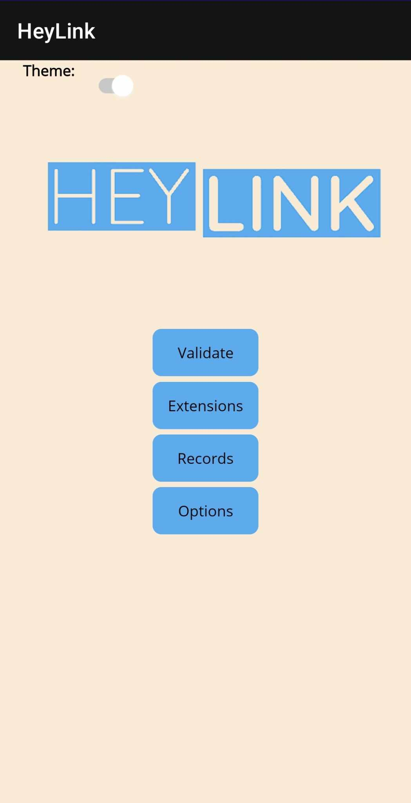

01.
Project 1: Job Recruitment System
02.
Project 2: Mobile Application
03.
Project 3: Client Site using Tailwind CSS
Software Application to Match Contractors and Jobs
You can find the project repository here.
This project involved us creating software the met the following brief: A local recruitment agency has contacted our company to develop an application for their head office to manage and keep track of their contractors. Contractors get added to the system’s employment pool and can then be assigned to a job. The job is then completed when the contractor lets head office know, and the contractors return to the available employment pool.
As such, we wrote a C# WPF program that meet these requirements. The program included the following features:
- A graphical user interface (GUI) frontend that displays the program for the user to manipulate the data such as add remove and search.
- A data structure to hold a custom class in the program.
- Validation of user input.
The deliverables included a functional, documented program; a testing plan document outlining tests to be conducted; and a test progress report outlining passes, fails and changes made or left to make in code.

Mobile Application (Hey Link Number Validation)
You can find the project repository here.
This project involved implementing our own wireframe designs for a mobile application in MAUI. Applying the knowledge gained through the portfolio components, we developed a complete mobile application from designs through to deployment.
The project planning and designing via wireframes, implementing these designs in MAUI and XAML (utilising the MVC/MVVM Software Pattern with clear distinctions between each component and connecting to Web API to retrieve and display data) and testing & deploying the application.
My project focused on a phone number validation app (titled HeyLink) that users could enter and save numbers into. An API call would be made using these entered phone numbers to retrieve information on elements such as country and carrier, and also determine (inclusive of incoming and outgoing country codes) what number the user needed to call to reach that phone line.
Multiple Phase Website Development
You can find the project repository here.
In this portfolio component, we completed a series of phases that implemented a prescribed layout with us making choices to suit the content. This involved working with CSS (including Tailwind), HTML and Javascript, as well as utilising version control.
The phases were
- Phase 1: Phase 1 is the first of the actual implementation phases and required us to implement and test semantically and structurally correct HTML for the provided layout design and content.
- Phase 2: This phase requires us to implement and test the required CSS to provide the layout as provided.
- Phase 3: In this phase, we added additional content and styling to amend the project to the given specifications.
- Phase 4: The fourth phase required the addition and testing of a JavaScript solution for a predefined problem to the page.
- Phase 5: In this phase, we implemented a dashboard for phases 0-4 using TailwindCSS, plus a demonstration form and information pages.